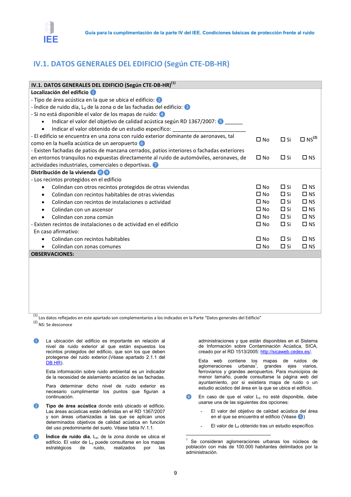

IEE 2016 · edición 2016-11-01 · capa guia
Documento GUIA-PDF-a5d4ef5252ba · SHA-256 del PDF 813669d3066c0ff79457d57b80b0512a4fbb248bc5db1f7baf473c369a064738
Página física 9 de 65.
Copia fiel del PDF fuente · Fuente oficial
Ficha de la disposición en la fuente oficial
Créditos y autoría en el PDF fuente. Reproducción con cita de fuente y autores.
Permiso literal: Se permite la reproducción del contenido total o parcial de esta Guía siempre y cuando se haga citando la fuente original.
Guía para la cumplimentación de la parte IV del IEE. Condiciones básicas de protección frente al ruido
Dirección y coordinación
Luis Vega Catalán
Mª Cristina Colomo Fernández
Eduardo González de Prado
Dirección General de Arquitectura, Vivienda y Suelo. Ministerio de Fomento
Mª Teresa Carrascal García
Instituto de Ciencias de la Construcción Eduardo Torroja. IETcc- CSIC
Autores
Mª Teresa Carrascal García
Amelia Romero Fernández
Mª Belén Casla Herguedas
Unidad de Calidad en la Construcción del Instituto de Ciencias de la Construcción Eduardo Torroja IETcc- CSIC
Se agradece la colaboración de
Belén Delgado Giménez
Fundación FIDAS
Alberto Esteban González
C.T.O. Estudios y proyectos – Gikesa
Giovanni Muzio
C.T.O. Estudios y proyectos
Francisco Labastida Azemar
Arquitecto, asesor CSCAE
Pedro F. Nogueira López
Universidad de A Coruña
Alejandro Sansegundo Sierra
Acústica SanSegundo
Esta Guía para la cumplimentación de la parte IV del IEE. Condiciones básicas de protección frente al ruido, nace en el marco del
convenio de colaboración llevado a cabo entre el Ministerio de Fomento y el Instituto de Ciencias de la Construcción Eduardo Torroja y
forma parte de la estrategia de este Ministerio de generar una serie de documentos de ayuda que faciliten la aplicación de la normativa
de la edificación y que en este caso concreto, ofrezca a los técnicos criterios para poder realizar una evaluación del estado inicial de las
edificaciones en lo referente a las condiciones acústicas de las viviendas existentes y plantear medidas que incrementen su confort
acústico.
En la redacción de este documento se ha utilizado algunos de los contenidos y de las figuras de la Guía de aplicación del DB HR
Protección frente al ruido. Dicha guía puede consultarse en:
http://www.codigotecnico.org/index.php/menu-documentos-complementarios/menu-guia-aplicacion-db-hr
Se permite la reproducción del contenido total o parcial de esta Guía siempre y cuando se haga citando la fuente original.
2Formato: Texto de la página (Markdown)
Guía para la cumplimentación de la parte IV del IEE. Condiciones básicas de protección frente al ruido
9
IV.1. DATOS GENERALES DEL EDIFICIO (Según CTE-DB-HR)
IV.1. DATOS GENERALES DEL EDIFICIO (Según CTE-DB-HR)(1)
Localización del edificio ❶
- Tipo de área acústica en la que se ubica el edificio: ❷
- Índice de ruido día, Ld de la zona o de las fachadas del edificio: ❸
- Si no está disponible el valor de los mapas de ruido: ❹
•
Indicar el valor del objetivo de calidad acústica según RD 1367/2007: ❺ ______
•
Indicar el valor obtenido de un estudio específico: _________________________
- El edificio se encuentra en una zona con ruido exterior dominante de aeronaves, tal
como en la huella acústica de un aeropuerto ❻
No
Si
NS(2)
- Existen fachadas de patios de manzana cerrados, patios interiores o fachadas exteriores
en entornos tranquilos no expuestas directamente al ruido de automóviles, aeronaves, de
actividades industriales, comerciales o deportivas. ❼
No
Si
NS
Distribución de la vivienda ❽❾
- Los recintos protegidos en el edificio
•
Colindan con otros recintos protegidos de otras viviendas
No
Si
NS
•
Colindan con recintos habitables de otras viviendas
No
Si
NS
•
Colindan con recintos de instalaciones o actividad
No
Si
NS
•
Colindan con un ascensor
No
Si
NS
•
Colindan con zona común
No
Si
NS
- Existen recintos de instalaciones o de actividad en el edificio
No
Si
NS
En caso afirmativo:
•
Colindan con recintos habitables
No
Si
NS
•
Colindan con zonas comunes
No
Si
NS
OBSERVACIONES:
(1) Los datos reflejados en este apartado son complementarios a los indicados en la Parte “Datos generales del Edificio”
(2) NS: Se desconoce
❶
La ubicación del edificio es importante en relación al
nivel de ruido exterior al que están expuestos los
recintos protegidos del edificio, que son los que deben
protegerse del ruido exterior.(Véase apartado 2.1.1 del
DB HR).
Esta información sobre ruido ambiental es un indicador
de la necesidad de aislamiento acústico de las fachadas.
Para determinar dicho nivel de ruido exterior es
necesario cumplimentar los puntos que figuran a
continuación.
❷
Tipo de área acústica donde está ubicado el edificio.
Las áreas acústicas están definidas en el RD 1367/2007
y son áreas urbanizadas a las que se aplican unos
determinados objetivos de calidad acústica en función
del uso predominante del suelo. Véase tabla IV.1.1.
❸
Índice de ruido día, Ld, de la zona donde se ubica el
edificio. El valor de Ld puede consultarse en los mapas
estratégicos
de
ruido,
realizados
por
las
administraciones y que están disponibles en el Sistema
de Información sobre Contaminación Acústica, SICA,
creado por el RD 1513/2005: http://sicaweb.cedex.es/.
Esta
web
contiene
los
mapas
de
ruidos
de
aglomeraciones
urbanas1,
grandes
ejes
viarios,
ferroviarios y grandes aeropuertos. Para municipios de
menor tamaño, puede consultarse la página web del
ayuntamiento, por si existiera mapa de ruido o un
estudio acústico del área en la que se ubica el edificio.
❹
En caso de que el valor Ld no esté disponible, debe
usarse una de las siguientes dos opciones:
-
El valor del objetivo de calidad acústica del área
en el que se encuentra el edificio (Véase ❺)
-
El valor de Ld obtenido tras un estudio específico.
1 Se consideran aglomeraciones urbanas los núcleos de
población con más de 100.000 habitantes delimitados por la
administración.
